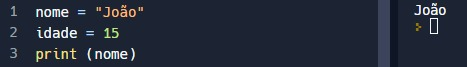
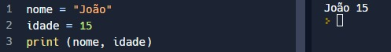
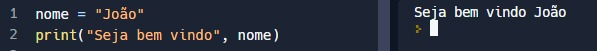
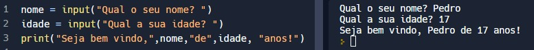

Acessibilidade
Acessibilidade
Comparado a outras linguagens de programação, os recursos do Python podem ser usados para escrever os mesmos requisitos em menos linhas de código. Atualmente, além de ser usado para construir soluções web, é amplamente utilizado nas seguintes aplicações: processamento de texto, Aprendizado de máquina e recomendações de conteúdo
Para exibir o conteúdo de uma variável, basta colocá-la dentro dos parênteses do comando print.
print(nome_da_variável)

Se precisar imprimir mais de uma, use assim:
print(nome_da_variavel_1, nome_da_variavel_2)

Se quiser mesclar texto e valores de variáveis, pode-se usar o seguinte formato, separando com vírgulas:
print("Seja bem vindo", nome)

Python tem uma forma muito simples de ler valores, basta usar o comando input e salvar o conteúdo digitado em uma variável.
nome = input("Qual o seu nome? ")
print("Seja bem vindo,", nome,"!")
